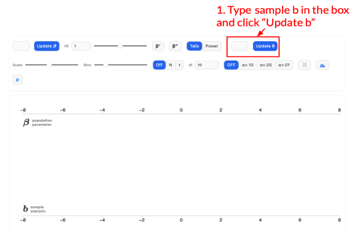
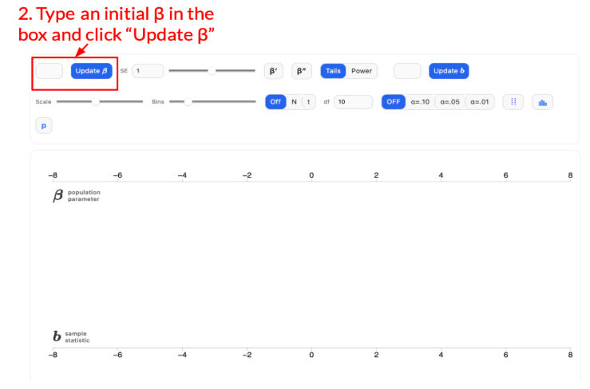
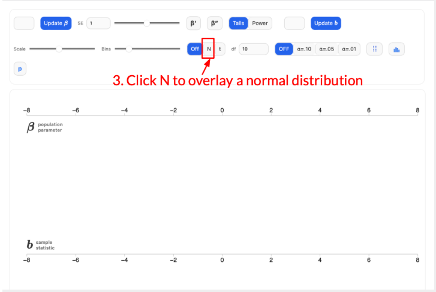
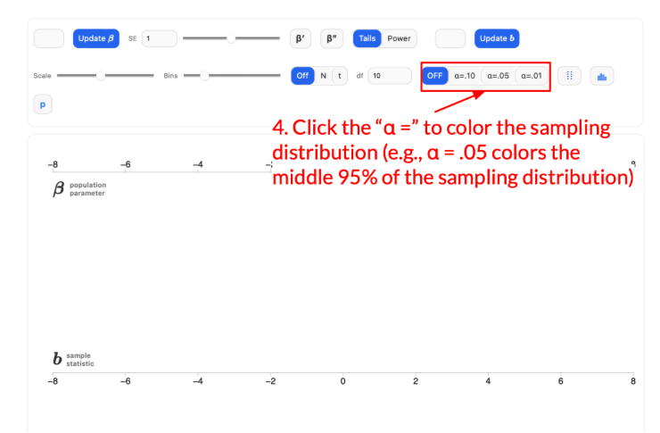
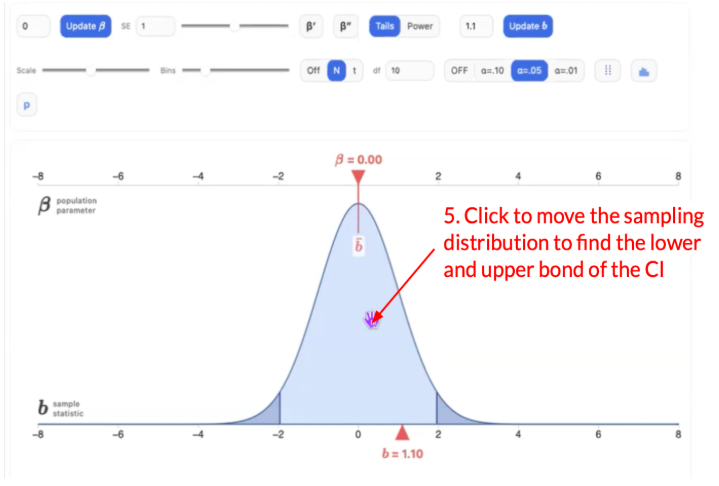
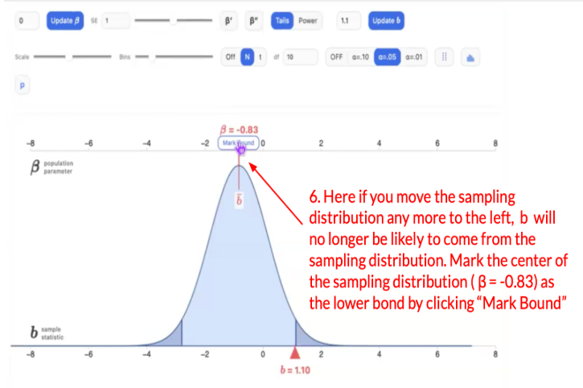
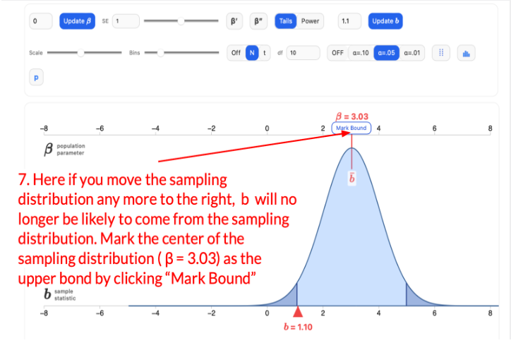

A researcher is interested in understanding the average rating of a movie on a scale of -3 being extremely bad to 3 being extremely good. The researchers collected the rating from 100 people who just watched the movie in a cinema. The average rating is 1.1.
In this activity, you will follow guided steps to construct two confidence intervals.
Context
A confidence interval app is displayed after Step 5. Please follow the five steps to construct a 95% confidence interval for the average rating of a movie in the confidence interval app. After you finish your construction, review Steps 6 and 7 to see the correct solution. If your confidence interval is incorrect, revise your work in the confidence interval app based on the explanations provided in those steps.
Your activity in the app will be recorded. To receive extra credit, it is important that you complete all steps and fully engage with the activity.
Step 1. In the app below, type in the b to 1.1, the sample mean, and click “Update b”

Step 2. Type in an initial β of your choice and click “Update β”. For example, you can set the β to be 0. You will adjust this later.

Step 3. Click “N” to put a sampling distribution of b. Notice that currently the SE, standard error, is set to 1.

Step 4. Now you should see a sampling distribution in the app. Click the α to color the sampling distribution. Because we want to construct a 95% confidence interval, choose α = .05 to color the middle 95% of the sampling distribution.

Step 5. Click on the sampling distribution to move it to find the lower bound and upper bound of the confidence interval. Explore on your own before moving on to the next step.
Remember: the lower bound and upper bound of a confidence interval indicate the range of β1s that we would consider likely to have produced the sample b1s.

Now, construct the 95% confidence interval in the app below based on the five steps above. You can go back to review each step when constructing the confidence interval. After you finish, review Step 6 and 7.
What is the 95% confidence interval?
Step 6. Mark the lower bound: this is the lowest value of β that will still make b = 1.1 likely. It does not need to be precisely the number.

Step 7. Mark the upper bound: this is the highest value of β that will still make b = 1.1 likely.
